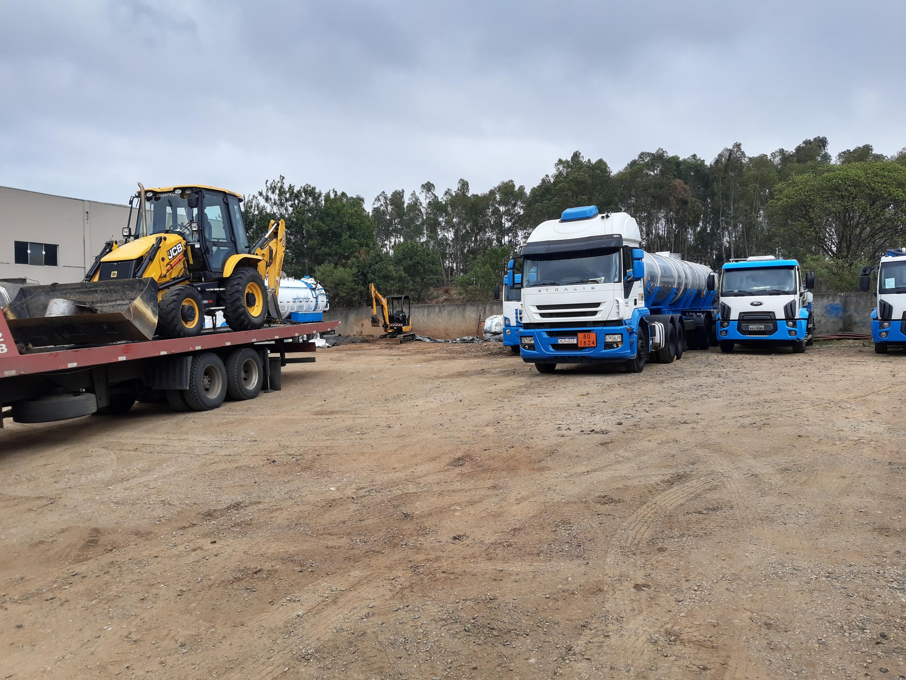
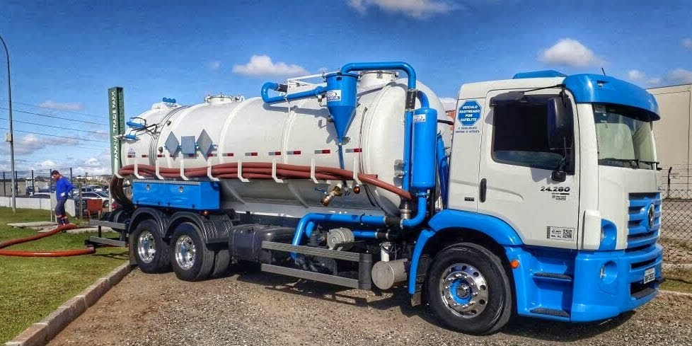
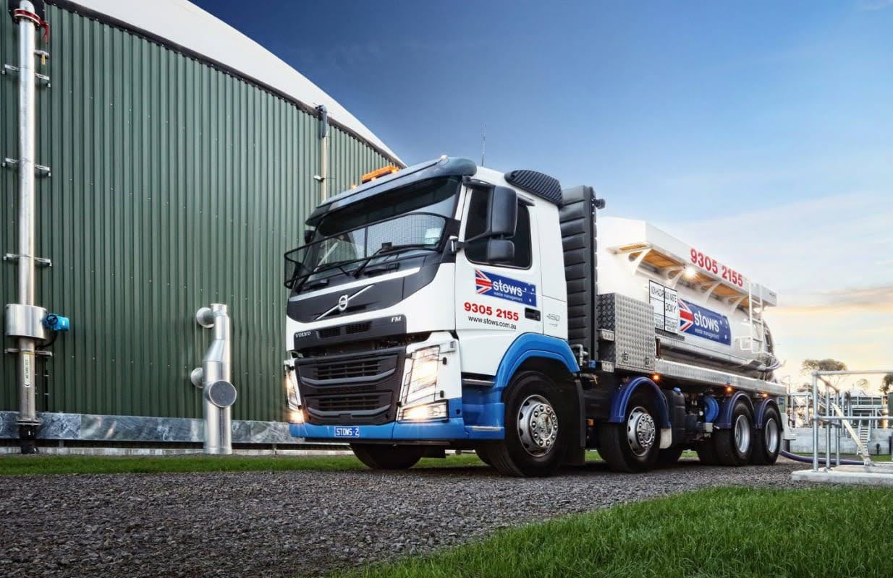
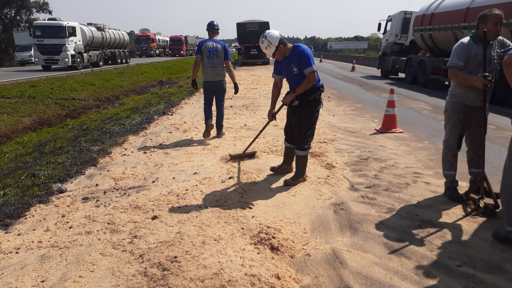

Resposta a emergências
Atendimento a acidentes rodoviários, vazamentos industriais e ocorrências com produtos perigosos. Equipe e equipamentos para contenção e controle dos impactos.
Fale com a equipeResposta a emergências químicas e ambientais. Pessoas preparadas, estrutura e ação para proteger vidas e o meio ambiente.

 Preparação técnica.
Preparação técnica.A S21 Emergências é o braço especializado do Grupo SANESB no atendimento a emergências químicas e ambientais. Nossa trajetória remonta a 1998, com foco em segurança, resposta técnica e preservação ambiental.
Da prevenção à recuperação do cenário afetado, atuamos em acidentes e falhas operacionais que colocam em risco as pessoas e o meio ambiente.
Ser a principal parceira na gestão de resíduos e na resposta a emergências ambientais, com compromisso com a segurança, a proteção da vida e a preservação do meio ambiente.
Soluções integradas para reduzir riscos, controlar ocorrências e recuperar o ambiente.
Atendimento a acidentes rodoviários, vazamentos industriais e ocorrências com produtos perigosos. Equipe e equipamentos para contenção e controle dos impactos.
Fale com a equipeColeta especializada, classificação, acondicionamento e identificação de resíduos. Encaminhamento para tratamento, incineração ou coprocessamento, conforme as características do material.
Conheça o serviçoPlanejamento do transporte de produtos e resíduos perigosos, com veículos adequados, profissionais capacitados e documentação aplicável à operação.
Conheça o serviçoContenção de derramamentos, remoção de resíduos e descontaminação do local. Transbordo controlado para outro veículo adequado em caso de avaria ou acidente.
Conheça o serviçoApoio na adequação de processos às exigências ambientais e na elaboração de laudos, planos de gerenciamento e documentos técnicos para licenças e auditorias.
Conheça o serviçoAvaliação da contaminação, planejamento e execução da remediação de solos e águas, buscando uma condição segura para o uso da área.
Conheça o serviçoElaboração de Planos de Atendimento a Emergências (PAE) e orientação para o gerenciamento de riscos, considerando as particularidades de cada operação.
Fale com a equipeCapacitação de equipes para a gestão de produtos perigosos e preparação para uma resposta coordenada, com foco em segurança e prevenção.
Fale com a equipeIntervenção técnica em vazamentos para reduzir a dispersão de contaminantes e proteger pessoas, recursos hídricos e o entorno da ocorrência.
Fale com a equipeA sua tranquilidade é a nossa prioridade. Conheça o escopo de atendimento e converse com a equipe sobre as necessidades da sua operação.

S21 HAZMATA gestão de resíduos perigosos exige conhecimento técnico e rigor em todas as etapas. A S21 oferece um ciclo completo, da remoção segura ao encaminhamento para uma destinação ambientalmente adequada.
Um serviço pensado para proteger sua empresa, as pessoas e o meio ambiente.
Consultar nossa equipe ↗
S21 HAZMATO transporte de produtos e resíduos perigosos é uma etapa crítica da cadeia logística. Cada viagem exige planejamento, equipe preparada e controle dos riscos envolvidos.
Segurança no planejamento, no deslocamento e na resposta a situações imprevistas.
Consultar nossa equipe ↗
S21 HAZMATEm acidentes e derramamentos, uma ação coordenada é essencial para reduzir os danos ao meio ambiente e os riscos à segurança pública. A central S21 atende 24 horas por dia, sete dias por semana.
Atendimento emergencial: 0800 878 21 77. Em uma ocorrência, priorize sua segurança e acione a central.
Consultar nossa equipe ↗ S21 HAZMAT
S21 HAZMATA legislação ambiental exige atenção contínua. A assessoria S21 apoia sua empresa na organização das obrigações técnicas e na adequação dos processos, contribuindo para reduzir riscos regulatórios e operacionais.
Conhecimento técnico para simplificar os processos e apoiar uma operação responsável.
Consultar nossa equipe ↗ S21 HAZMAT
S21 HAZMATUm incidente ambiental pode deixar impactos duradouros no solo e nas águas. A S21 atua na recuperação de áreas contaminadas com uma estratégia específica para as características do local e dos produtos envolvidos.
Do diagnóstico à execução: compromisso com a recuperação ambiental e a redução dos impactos de longo prazo.
Consultar nossa equipe ↗Cada ocorrência exige uma estratégia própria, do reconhecimento dos riscos ao encaminhamento dos materiais e à recuperação da área.
Identificação dos produtos envolvidos, das condições do local e da extensão dos impactos para orientar a resposta e os recursos necessários.
Mobilização dos recursos e execução das ações de contenção, limpeza e transbordo, conforme os riscos identificados na ocorrência.
Gestão dos resíduos e planejamento da remediação para reduzir os impactos e buscar condições seguras de uso do local.
O planejamento dos serviços considera as exigências federais, estaduais e municipais, além das normas técnicas e das regras específicas de cada atividade e região.
Profissionais capacitados, procedimentos adequados e documentação são parte do compromisso com a segurança, a responsabilidade corporativa e a preservação ambiental.
A Política Nacional de Resíduos Sólidos (Lei nº 12.305/2010) estabelece diretrizes para a gestão dos resíduos, incluindo os perigosos. O gerenciamento considera as obrigações aplicáveis à geração, ao transporte e à destinação.
As referências técnicas incluem a ABNT NBR 10004 para classificação de resíduos e a ABNT NBR 7503 para informações de emergência no transporte terrestre de produtos perigosos, conforme sua aplicação. A edição vigente e a necessidade de cada documento devem ser verificadas para a operação.
As resoluções do Conselho Nacional do Meio Ambiente integram as referências para avaliar as exigências ambientais. Sua aplicação depende da atividade, dos materiais e das autorizações necessárias em cada caso.
O transporte considera o regulamento da ANTT para produtos perigosos, incluindo a Resolução nº 5.998/2022 e suas alterações, além da documentação e dos requisitos aplicáveis ao veículo, à carga e à equipe.
O atendimento deve considerar as particularidades de cada região, as licenças e as orientações dos órgãos ambientais competentes, incluindo o IBAMA quando aplicável.
Em uma ocorrência, priorize sua segurança e informe a localização à equipe.
A partir de nossa sede em Araucária, no Paraná, coordenamos a resposta às ocorrências com uma rede de bases de emergência em território nacional.
No Sul do Brasil, atendemos demandas no Paraná, em Santa Catarina e no Rio Grande do Sul. Consulte a central para confirmar a mobilização e os recursos necessários à sua ocorrência.


Conheça nossas equipes, viaturas e registros de operações. Selecione uma foto para ampliar.
Segurança em cada etapa.
Do planejamento à resposta em campo.
Solicite informações sobre nossos serviços, planos de emergência e atendimento para sua empresa.
0800 878 21 77 ↗Central de emergência · Atendimento 24 horas